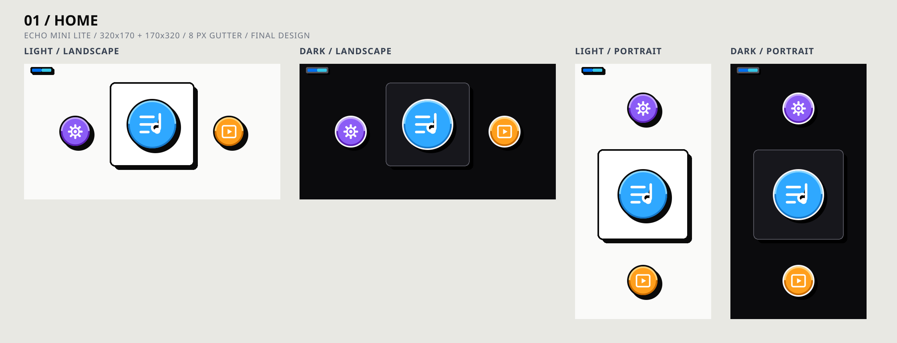
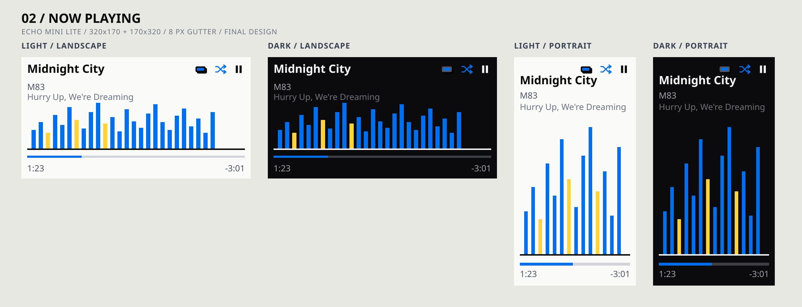
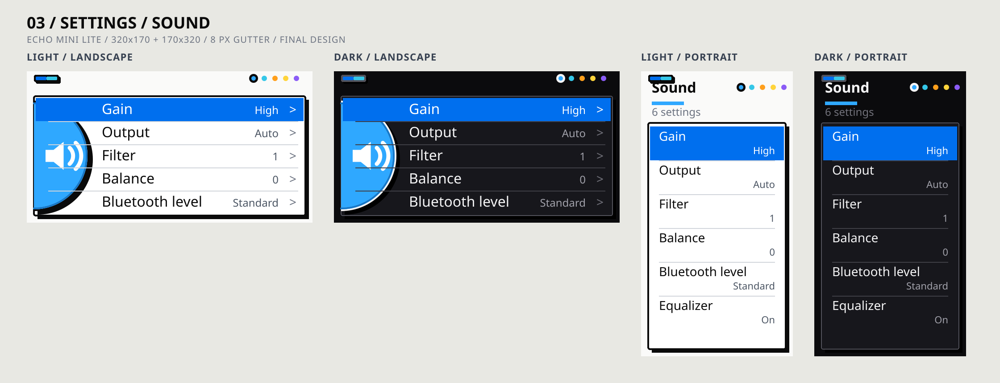
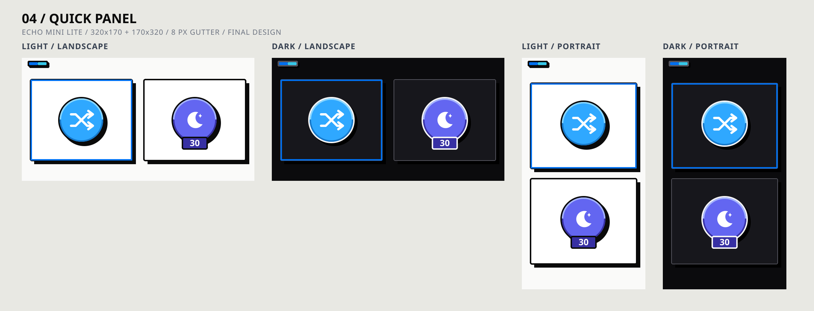
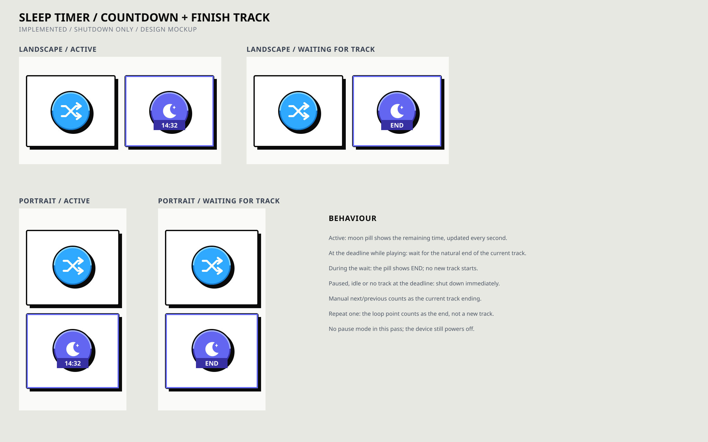
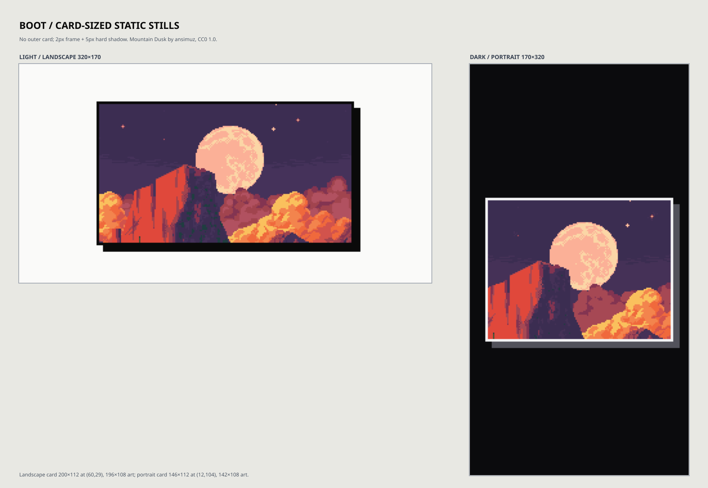

ECHO NEUBRUTALISM / LITE UI / FINAL MOCKUPS
Final design-reference sheets for the 512 MB Lite UI. The screen images are 2× previews.
These are design mockups, not screenshots of the device. They show the
intended layout and palette; real font rendering and final placement can differ slightly.
The boot sheet is rendered from the actual LBOO / LBO2 assets.
Three self-drawn badges; landscape keeps the horizontal carousel, portrait uses a vertical carousel with a 112×112 selected card and 32 px gaps. A 28×8 status meter sits at top-left: blue = Bluetooth, cyan = playing.

Landscape keeps the title/spectrum/progress arrangement. Portrait moves the 18 px state icons to the top right, puts the title below, and uses a taller spectrum/lyrics area. A 14×8 Bluetooth-only chip sits beside the shuffle/play icons.

Landscape drops the text header; the half-badge, category dots and rows carry the category. Portrait keeps the category name, removes the large icon, and uses a category colour rule plus two-line rows so long labels and values fit at 170 px wide.

Landscape uses two side-by-side cards; portrait stacks two 146×118 cards.

Implemented in MINIV928. The moon pill counts down; after the deadline it shows END while the current track finishes, then the player powers off. No pause mode.

Actual firmware art: 196×108 landscape / 142×108 portrait art inside 2 px frames, giving 200×112 / 146×112 card footprints with 5 px shadows and no outer card. Mountain Dusk by ansimuz, CC0 1.0.

EchoNeubrutalism · 512 MB Echo Mini · design reference · 2026